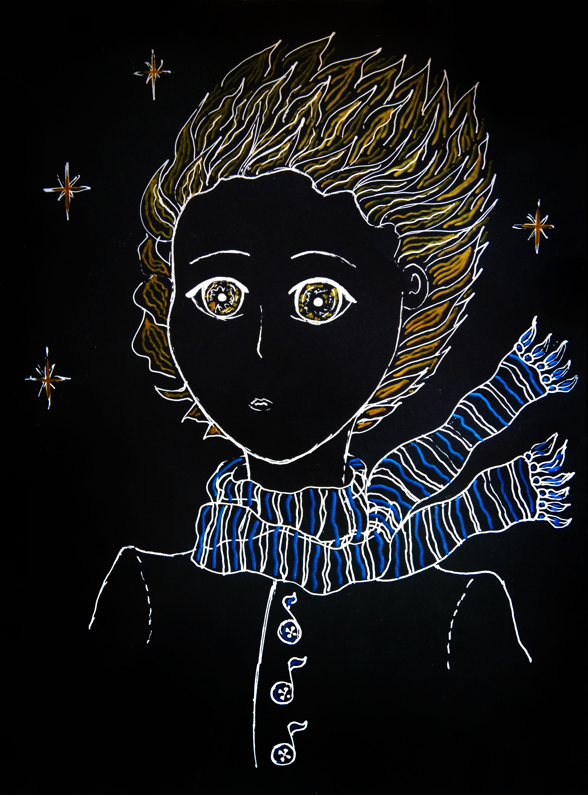
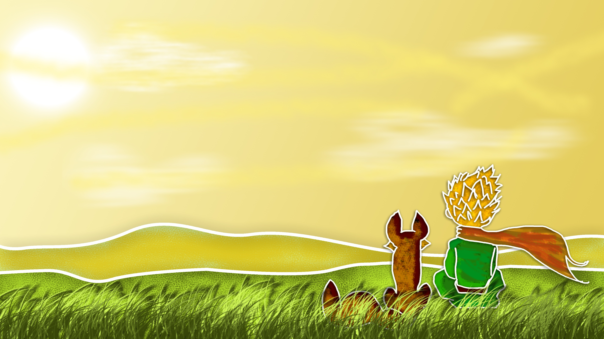
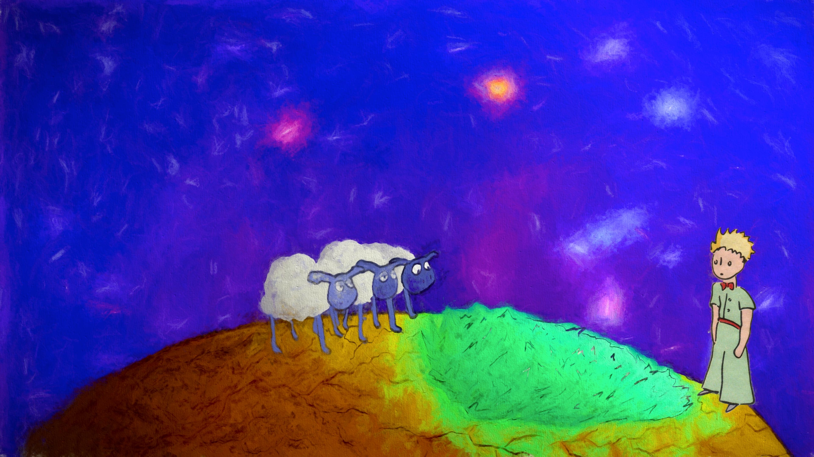
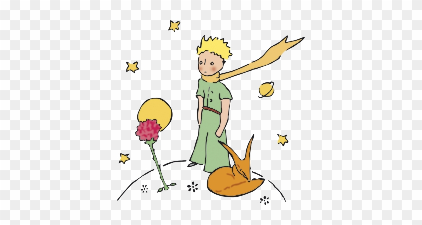
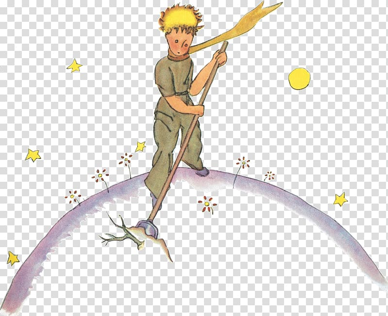

Cover

The Little Prince
(My Story)
“What is Essential is Invisible to the eyes.”
In this short interactive book, I combine The Little Prince with my personal story.
A story that is only revealed through interaction.

“What is Essential is Invisible to the eyes.”
In this short interactive book, I combine The Little Prince with my personal story.

As most people probably already know, the story of this wonderful little explorer, the Little Prince, leaves his tiny planet to explore the universe. A vast universe full of adventures to discover and experience.
In my own life, I also left home to seek a new path and grow, completely unaware of what the future might hold and what life would be like on the other side of the planet, beyond the horizon. This time, I left my country, Guatemala, at the age of 15, along with my sister and my mother, to reunite with my father in a world entirely different from the one I left behind.

The Little Prince notices things that many adults sometimes ignore.
When I arrived into this new place, New York (USA), I began to see life with new eyes. Everything was completely different: advanced technology, innovative transportation, remarkable security, and a different system. I felt small even in front of the enormous skyscrapers the first time I saw the city.

Sometimes the most important things aren't seen. They're felt. Family, friends, neighbors, communities, and even strangers can shape who we become. Like any good adventurer, the Little Prince taught me that even though we may leave precius things behind we gotta keep bein curius and positive every single day, the beauty of life can be found in every corner, detail, place, and person.
Hover the star ⭐ to reveal a secret
Secret: My goal in this new world (New York City) is to keep loving the people close to me.

♱THANK YOU FOR READING MY STORY♱
This project was built from inspiration and real life experiences.